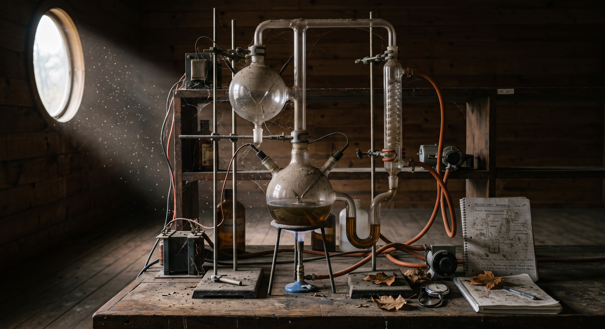
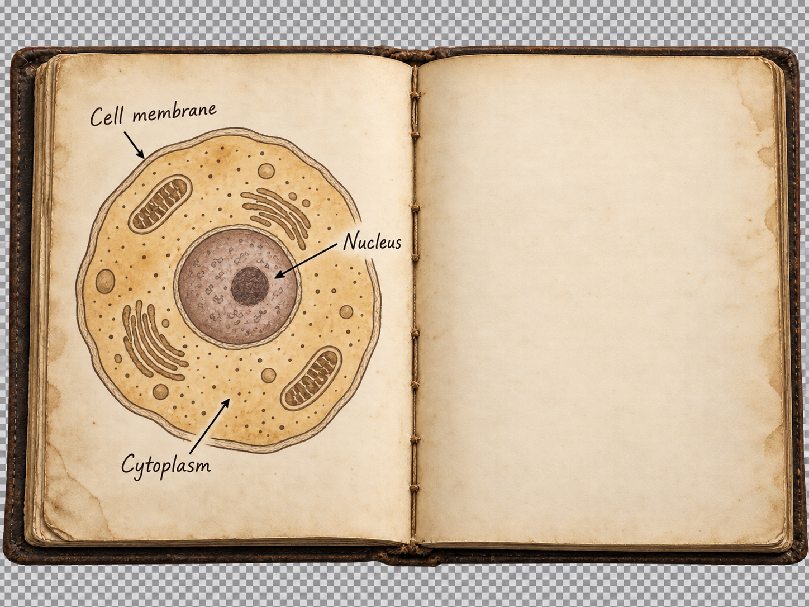

First, the four reactants.
Watch them enter the reaction vessel.

CELLULAR USE · NOT STRUCTURES MADE IN THE FLASK
×
Select a correct organic compound. The journal will show where it is found in a modern cell and what cells can do with it.
Miller’s 1955 results
·
Cell building blocks
0 / 4 discovered